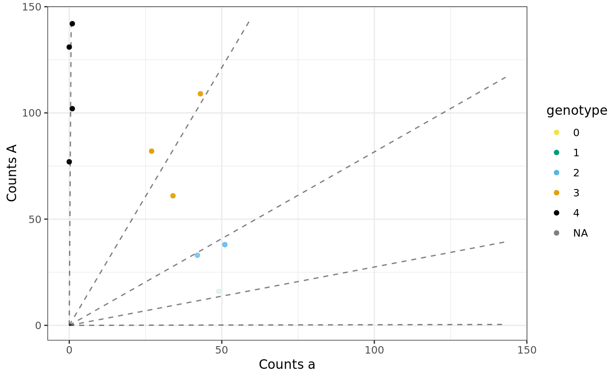
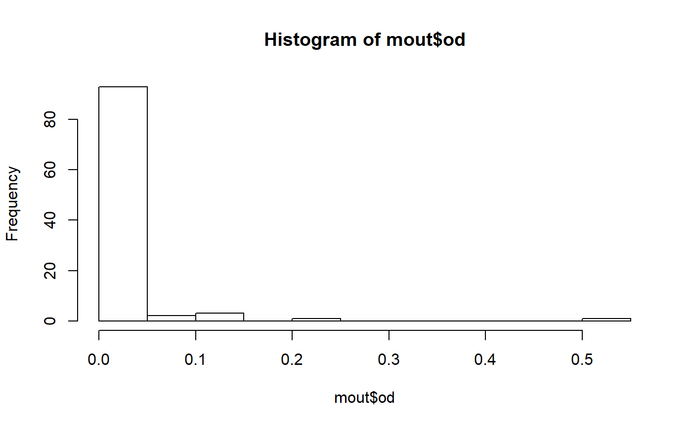

Multi-SNP updog.
mupdog.RdA method to genotype autopolyploids using GBS or RAD-seq like data by accounting for correlations in the genotype distribution between the individuals.
mupdog(refmat, sizemat, ploidy, verbose = TRUE, mean_bias = 0, var_bias = 1, mean_seq = -4.7, var_seq = 1, seq = NULL, bias = NULL, od = NULL, allele_freq = NULL, inbreeding = NULL, cor_mat = NULL, postmean = NULL, postvar = NULL, update_cor = TRUE, update_inbreeding = TRUE, update_allele_freq = TRUE, num_core = 1, update_method = c("Brent", "L-BFGS-B"), control = list())
Arguments
| refmat | A matrix of reference counts. The rows index the individuals and the columns index the SNPs. |
|---|---|
| sizemat | A matrix of total counts.
The rows index the individuals and the columns index the SNPs.
Should have the same dimensions as |
| ploidy | The ploidy of the species. To estimate the ploidy,
re-run |
| verbose | Should we print a lot of output |
| mean_bias | The prior mean of the log-bias. Defaults to 0 (no bias). |
| var_bias | The prior variance on the log-bias. Defaults to 1. This roughly corresponds to likely bias values between 0.14 and 7.4. This is a far wider interval than what we observe in practice, thus making this prior rather uninformative. We usually observe bias values somewhere between 0.5 and 2. |
| mean_seq | The prior mean of the logit-sequencing-error-rate. Defaults to -4.7. This corresponds to a sequencing error rate of 0.009. |
| var_seq | The prior variance of the logit-sequencing-error-rate. Defaults to 1. This corresponds to likely values of 0.001 and 0.06. This upper bound is larger than what we would expect given the current state of next-gen-sequencing technology. |
| seq | A vector of initial sequencing errors. Should be
the same length as the number of columns of |
| bias | A vector of initial bias parameters. Should be the
same length as the number of columns of |
| od | A vector of initial overdispersion parameters.
Should be the same length as the number of columns of
|
| allele_freq | A vector of initial allele frequencies.
Should be the same length as the number of columns of
|
| inbreeding | A vector of initial individual-specific
inbreeding coefficients.
Should be the same length as the number of rows of
|
| cor_mat | Initial correlation matrix. Should have the same number of columns/rows as the number of individuals. |
| postmean | Initial variational posterior means. Should
have the same dimensions as |
| postvar | Initial posterior variances. Should have the
same dimensions as |
| update_cor | A logical. Should we update the underlying
correlation matrix |
| update_inbreeding | A logical. Should we update the
inbreeding coefficients |
| update_allele_freq | A logical. Should we update the
allele frequencies |
| num_core | The number of cores to use if you want to
run the optimization steps in parallel. If |
| update_method | What generic optimizer should we use to update |
| control | A list of control parameters ( |
Value
A list with some or all of the following elements:
map_dosageA matrix of numerics containing the variational maximum-a-posterior (MAP) genotypes (allele dosages) for each individual at each SNP. Element (i, j) is the MAP genotype for individual i at SNP j.
maxpostprobA matrix of numerics containing the variational maximum posterior probabilities for each individual at each SNP. The (i, j)th element is the variational posterior probability that individual i is genotyped correctly at SNP j.
postprobA three-way array of numerics. Element (i, j, k) is the variational posterior probability that individual i has genotype k-1 at SNP j.
seqA vector of numerics. Element j is the estimated sequencing error rate for SNP j.
biasA vector of numerics. Element j is the estimated allelic bias for SNP j.
odA vector of numerics. Element j is the estimated overdispersion parameter for SNP j.
allele_freqA vector of numerics. Element j is the estimated allele-frequency for SNP j.
inbreedingA vector of numerics. Element i is the estimated inbreeding coefficient for individual i.
cor_matA symmetric matrix of numerics. Element (i, j) is the estimated _latent_ correlation between individual i and individual j.
postmeanA matrix of numerics. Element (i, j) is the variational posterior mean for individual i at SNP j.
postvarA matrix of numerics. Element (i, j) is the variational posterior variance for individual i at SNP j.
input$refmatA matrix of numerics. The inputted
refmat.input$sizematA matrix of numerics. The inputted
sizemat.input$ploidyThe inputted
ploidy.objThe maximized variational objective.
Details
Blischak et al (2017) developed a genotyping approach for autopolyploids that assumes a Balding-Nichols generative model (Balding and Nichols, 1997) on the genotypes. Using a different generative model, Gerard et al (2018) accounted for common issues in sequencing data ignored by previous researchers. Mupdog unites and extends these two approaches:
Unite: We account for locus-specific allele-bias, locus-specific sequencing error, and locus-specific overdispersion while marginally assuming a Balding-Nichols generative model on the genotypes.
Extend: We account for underlying correlations between the individuals using a Gaussian copula model.
Mupdog uses a variational Bayes approach to estimate all parameters of interest and the posterior probabilities of the genotypes for each individual at each locus.
References
David J Balding and Richard A Nichols. Significant genetic correlations among caucasians at forensic DNA loci. Heredity, 78(6):583–589, 1997. doi: 10.1038/sj.hdy.6881750.
Paul D Blischak, Laura S Kubatko, and Andrea D Wolfe. SNP genotyping and parameter estimation in polyploids using low-coverage sequencing data. Bioinformatics, page btx587, 2017. doi: 10.1093/bioinformatics/btx587.
Gerard, D., Ferrao, L. F. V., Garcia, A. A. F., & Stephens, M. (2018). Genotyping Polyploids from Messy Sequencing Data. *Genetics*, 210(3), 789-807. doi: [10.1534/genetics.118.301468](https://doi.org/10.1534/genetics.118.301468).
Examples
data(uitdewilligen) mout <- mupdog(refmat = uitdewilligen$refmat, sizemat = uitdewilligen$sizemat, ploidy = uitdewilligen$ploidy, verbose = FALSE, control = list(obj_tol = 10^-4))#> iteration: 1 #> objective: -4068.004 #> err: Inf #> #> iteration: 2 #> objective: -3714.309 #> err: 0.09522518 #> #> iteration: 3 #> objective: -3615.584 #> err: 0.0273053 #> #> iteration: 4 #> objective: -3560.091 #> err: 0.01558764 #> #> iteration: 5 #> objective: -3523.993 #> err: 0.01024341 #> #> iteration: 6 #> objective: -3501.327 #> err: 0.006473428 #> #> iteration: 7 #> objective: -3487.336 #> err: 0.00401209 #> #> iteration: 8 #> objective: -3479.239 #> err: 0.002327236 #> #> iteration: 9 #> objective: -3473.856 #> err: 0.001549566 #> #> iteration: 10 #> objective: -3469.601 #> err: 0.001226253 #> #> iteration: 11 #> objective: -3466.253 #> err: 0.0009659177 #> #> iteration: 12 #> objective: -3463.819 #> err: 0.000702689 #> #> iteration: 13 #> objective: -3461.877 #> err: 0.000560872 #> #> iteration: 14 #> objective: -3460.252 #> err: 0.0004698615 #> #> iteration: 15 #> objective: -3458.951 #> err: 0.0003761211 #> #> iteration: 16 #> objective: -3457.872 #> err: 0.0003118588 #> #> iteration: 17 #> objective: -3456.967 #> err: 0.0002619549 #> #> iteration: 18 #> objective: -3456.188 #> err: 0.0002253784 #> #> iteration: 19 #> objective: -3455.494 #> err: 0.0002006203 #> #> iteration: 20 #> objective: -3454.872 #> err: 0.0001801304 #> #> iteration: 21 #> objective: -3454.3 #> err: 0.0001657017 #> #> iteration: 22 #> objective: -3453.789 #> err: 0.0001477875 #> #> iteration: 23 #> objective: -3453.312 #> err: 0.0001382243 #> #> iteration: 24 #> objective: -3452.858 #> err: 0.0001315826 #> #> iteration: 25 #> objective: -3452.423 #> err: 0.0001259236 #> #> iteration: 26 #> objective: -3452.011 #> err: 0.0001192502 #> #> iteration: 27 #> objective: -3451.604 #> err: 0.0001179988 #> #> iteration: 28 #> objective: -3451.206 #> err: 0.0001154617 #> #> iteration: 29 #> objective: -3450.814 #> err: 0.0001134334 #> #> iteration: 30 #> objective: -3450.429 #> err: 0.0001115806 #> #> iteration: 31 #> objective: -3450.053 #> err: 0.0001090201 #> #> iteration: 32 #> objective: -3449.69 #> err: 0.0001052301 #> #> iteration: 33 #> objective: -3449.327 #> err: 0.0001053119 #> #> iteration: 34 #> objective: -3448.98 #> err: 0.0001005985 #> #> iteration: 35 #> objective: -3448.632 #> err: 0.0001008868 #> #> iteration: 36 #> objective: -3448.295 #> err: 9.776157e-05 #>## mupdog can correctly estimate ploidy to be 4 mout2 <- mupdog(refmat = uitdewilligen$refmat, sizemat = uitdewilligen$sizemat, ploidy = 2, verbose = FALSE, control = list(obj_tol = 10^-4))#> iteration: 1 #> objective: -4988.08 #> err: Inf #> #> iteration: 2 #> objective: -4409.238 #> err: 0.1312795 #> #> iteration: 3 #> objective: -4220.473 #> err: 0.04472598 #> #> iteration: 4 #> objective: -4093.127 #> err: 0.0311121 #> #> iteration: 5 #> objective: -3999.138 #> err: 0.0235024 #> #> iteration: 6 #> objective: -3940.206 #> err: 0.0149565 #> #> iteration: 7 #> objective: -3896.064 #> err: 0.0113299 #> #> iteration: 8 #> objective: -3858.698 #> err: 0.009683487 #> #> iteration: 9 #> objective: -3835.066 #> err: 0.006162167 #> #> iteration: 10 #> objective: -3817.792 #> err: 0.004524676 #> #> iteration: 11 #> objective: -3803.275 #> err: 0.00381697 #> #> iteration: 12 #> objective: -3790.54 #> err: 0.003359691 #> #> iteration: 13 #> objective: -3779.672 #> err: 0.002875205 #> #> iteration: 14 #> objective: -3770.599 #> err: 0.002406444 #> #> iteration: 15 #> objective: -3760.231 #> err: 0.002757164 #> #> iteration: 16 #> objective: -3752.083 #> err: 0.002171719 #> #> iteration: 17 #> objective: -3746.855 #> err: 0.001395079 #> #> iteration: 18 #> objective: -3742.33 #> err: 0.001209377 #> #> iteration: 19 #> objective: -3738.327 #> err: 0.00107078 #> #> iteration: 20 #> objective: -3734.444 #> err: 0.001039804 #> #> iteration: 21 #> objective: -3730.92 #> err: 0.000944412 #> #> iteration: 22 #> objective: -3727.004 #> err: 0.001050813 #> #> iteration: 23 #> objective: -3721.546 #> err: 0.001466428 #> #> iteration: 24 #> objective: -3716.246 #> err: 0.001426215 #> #> iteration: 25 #> objective: -3713.547 #> err: 0.0007268527 #> #> iteration: 26 #> objective: -3711.302 #> err: 0.0006048171 #> #> iteration: 27 #> objective: -3709.298 #> err: 0.0005402403 #> #> iteration: 28 #> objective: -3707.429 #> err: 0.0005043377 #> #> iteration: 29 #> objective: -3705.816 #> err: 0.000435211 #> #> iteration: 30 #> objective: -3704.253 #> err: 0.0004220043 #> #> iteration: 31 #> objective: -3702.723 #> err: 0.0004131516 #> #> iteration: 32 #> objective: -3701.104 #> err: 0.0004374147 #> #> iteration: 33 #> objective: -3698.303 #> err: 0.0007573258 #> #> iteration: 34 #> objective: -3694.692 #> err: 0.0009772861 #> #> iteration: 35 #> objective: -3691.193 #> err: 0.0009480605 #> #> iteration: 36 #> objective: -3689.552 #> err: 0.0004448232 #> #> iteration: 37 #> objective: -3688.016 #> err: 0.0004163876 #> #> iteration: 38 #> objective: -3686.505 #> err: 0.0004097237 #> #> iteration: 39 #> objective: -3683.452 #> err: 0.0008288683 #> #> iteration: 40 #> objective: -3681.264 #> err: 0.0005945027 #> #> iteration: 41 #> objective: -3679.54 #> err: 0.0004683764 #> #> iteration: 42 #> objective: -3677.91 #> err: 0.0004433726 #> #> iteration: 43 #> objective: -3676.797 #> err: 0.0003027168 #> #> iteration: 44 #> objective: -3675.627 #> err: 0.0003183562 #> #> iteration: 45 #> objective: -3674.602 #> err: 0.000278703 #> #> iteration: 46 #> objective: -3673.752 #> err: 0.000231437 #> #> iteration: 47 #> objective: -3673.029 #> err: 0.0001969332 #> #> iteration: 48 #> objective: -3672.325 #> err: 0.0001915704 #> #> iteration: 49 #> objective: -3671.761 #> err: 0.0001537277 #> #> iteration: 50 #> objective: -3671.17 #> err: 0.0001610736 #> #> iteration: 51 #> objective: -3670.235 #> err: 0.0002547153 #> #> iteration: 52 #> objective: -3668 #> err: 0.0006093128 #> #> iteration: 53 #> objective: -3666.686 #> err: 0.0003581982 #> #> iteration: 54 #> objective: -3666.027 #> err: 0.0001798751 #> #> iteration: 55 #> objective: -3665.466 #> err: 0.0001531283 #> #> iteration: 56 #> objective: -3664.984 #> err: 0.0001314217 #> #> iteration: 57 #> objective: -3664.518 #> err: 0.000127086 #> #> iteration: 58 #> objective: -3664.047 #> err: 0.0001286302 #> #> iteration: 59 #> objective: -3663.599 #> err: 0.0001222192 #> #> iteration: 60 #> objective: -3663.173 #> err: 0.0001162342 #> #> iteration: 61 #> objective: -3662.792 #> err: 0.0001040577 #> #> iteration: 62 #> objective: -3662.417 #> err: 0.0001025835 #> #> iteration: 63 #> objective: -3662.066 #> err: 9.575091e-05 #>mout6 <- mupdog(refmat = uitdewilligen$refmat, sizemat = uitdewilligen$sizemat, ploidy = 6, verbose = FALSE, control = list(obj_tol = 10^-4))#> iteration: 1 #> objective: -3929.198 #> err: Inf #> #> iteration: 2 #> objective: -3727.866 #> err: 0.0540073 #> #> iteration: 3 #> objective: -3678.818 #> err: 0.01333256 #> #> iteration: 4 #> objective: -3653.922 #> err: 0.00681372 #> #> iteration: 5 #> objective: -3639.275 #> err: 0.004024521 #> #> iteration: 6 #> objective: -3628.92 #> err: 0.002853548 #> #> iteration: 7 #> objective: -3620.541 #> err: 0.002314418 #> #> iteration: 8 #> objective: -3613.008 #> err: 0.002084956 #> #> iteration: 9 #> objective: -3606.289 #> err: 0.00186309 #> #> iteration: 10 #> objective: -3600.409 #> err: 0.001633066 #> #> iteration: 11 #> objective: -3595.047 #> err: 0.001491603 #> #> iteration: 12 #> objective: -3590.651 #> err: 0.001224287 #> #> iteration: 13 #> objective: -3587.385 #> err: 0.0009101894 #> #> iteration: 14 #> objective: -3585.003 #> err: 0.0006644269 #> #> iteration: 15 #> objective: -3582.945 #> err: 0.0005743984 #> #> iteration: 16 #> objective: -3580.928 #> err: 0.0005634876 #> #> iteration: 17 #> objective: -3578.49 #> err: 0.0006812236 #> #> iteration: 18 #> objective: -3575.771 #> err: 0.0007604835 #> #> iteration: 19 #> objective: -3573.673 #> err: 0.0005870658 #> #> iteration: 20 #> objective: -3572.054 #> err: 0.0004531504 #> #> iteration: 21 #> objective: -3570.34 #> err: 0.000480022 #> #> iteration: 22 #> objective: -3568.431 #> err: 0.0005350697 #> #> iteration: 23 #> objective: -3566.656 #> err: 0.0004975325 #> #> iteration: 24 #> objective: -3565.385 #> err: 0.000356606 #> #> iteration: 25 #> objective: -3564.274 #> err: 0.0003116588 #> #> iteration: 26 #> objective: -3563.105 #> err: 0.0003279634 #> #> iteration: 27 #> objective: -3561.903 #> err: 0.0003375643 #> #> iteration: 28 #> objective: -3560.732 #> err: 0.0003289424 #> #> iteration: 29 #> objective: -3559.511 #> err: 0.0003430636 #> #> iteration: 30 #> objective: -3558.187 #> err: 0.0003720961 #> #> iteration: 31 #> objective: -3556.816 #> err: 0.0003853604 #> #> iteration: 32 #> objective: -3555.935 #> err: 0.0002477694 #> #> iteration: 33 #> objective: -3555.339 #> err: 0.0001676477 #> #> iteration: 34 #> objective: -3554.874 #> err: 0.0001306528 #> #> iteration: 35 #> objective: -3554.523 #> err: 9.87756e-05 #>mout8 <- mupdog(refmat = uitdewilligen$refmat, sizemat = uitdewilligen$sizemat, ploidy = 8, verbose = FALSE, control = list(obj_tol = 10^-4))#> iteration: 1 #> objective: -3871.08 #> err: Inf #> #> iteration: 2 #> objective: -3729.46 #> err: 0.03797315 #> #> iteration: 3 #> objective: -3693.022 #> err: 0.009866692 #> #> iteration: 4 #> objective: -3671.193 #> err: 0.005946183 #> #> iteration: 5 #> objective: -3657.291 #> err: 0.00380116 #> #> iteration: 6 #> objective: -3647.469 #> err: 0.002692867 #> #> iteration: 7 #> objective: -3640.28 #> err: 0.0019746 #> #> iteration: 8 #> objective: -3634.784 #> err: 0.001512252 #> #> iteration: 9 #> objective: -3630.1 #> err: 0.001290388 #> #> iteration: 10 #> objective: -3626.043 #> err: 0.001118805 #> #> iteration: 11 #> objective: -3622.494 #> err: 0.0009795486 #> #> iteration: 12 #> objective: -3619.314 #> err: 0.0008786875 #> #> iteration: 13 #> objective: -3616.447 #> err: 0.0007927541 #> #> iteration: 14 #> objective: -3614.01 #> err: 0.0006742736 #> #> iteration: 15 #> objective: -3611.974 #> err: 0.0005636721 #> #> iteration: 16 #> objective: -3610.18 #> err: 0.0004968922 #> #> iteration: 17 #> objective: -3608.589 #> err: 0.0004410456 #> #> iteration: 18 #> objective: -3607.342 #> err: 0.0003457679 #> #> iteration: 19 #> objective: -3606.293 #> err: 0.0002906526 #> #> iteration: 20 #> objective: -3605.372 #> err: 0.000255489 #> #> iteration: 21 #> objective: -3604.543 #> err: 0.0002301285 #> #> iteration: 22 #> objective: -3603.748 #> err: 0.0002204604 #> #> iteration: 23 #> objective: -3602.999 #> err: 0.0002080081 #> #> iteration: 24 #> objective: -3602.267 #> err: 0.0002031751 #> #> iteration: 25 #> objective: -3601.525 #> err: 0.0002061368 #> #> iteration: 26 #> objective: -3600.761 #> err: 0.0002119147 #> #> iteration: 27 #> objective: -3600.044 #> err: 0.0001993542 #> #> iteration: 28 #> objective: -3599.203 #> err: 0.0002335174 #> #> iteration: 29 #> objective: -3598.251 #> err: 0.0002645737 #> #> iteration: 30 #> objective: -3597.267 #> err: 0.0002735175 #> #> iteration: 31 #> objective: -3596.581 #> err: 0.0001907851 #> #> iteration: 32 #> objective: -3596.058 #> err: 0.0001455975 #> #> iteration: 33 #> objective: -3595.619 #> err: 0.0001218929 #> #> iteration: 34 #> objective: -3595.218 #> err: 0.0001116232 #> #> iteration: 35 #> objective: -3594.846 #> err: 0.0001035693 #> #> iteration: 36 #> objective: -3594.493 #> err: 9.804893e-05 #>y <- c(mout2$obj, mout$obj, mout6$obj, mout8$obj) x <- seq(2, 8, by = 2) plot(x, y, type = "l", xlab = "ploidy", ylab = "objective")